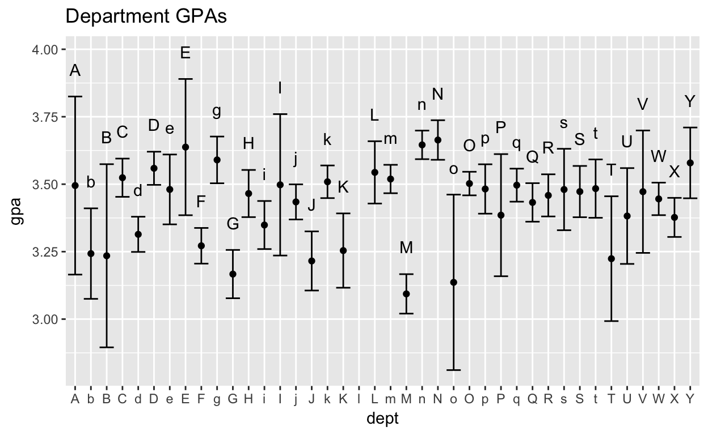
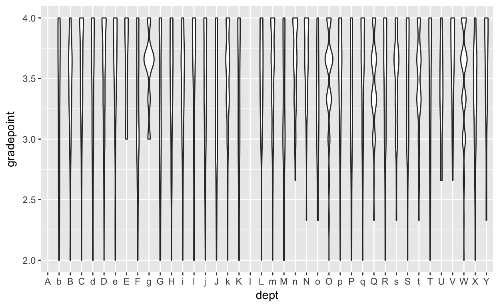

Grades are ubiquitous in just about every formal educational setting. The grade-point average is a common way of summarising a set of grades. But it seems to exist in a non-statistical world without confidence intervals and covariates. In this project, you’ll examine a roster of actual grades from a US college, tracking all students in the class over their 4-year course of study.
The grades you’ll study are for students graduating from the college in 2005. To protect the students’ privacy, all identifying details have been coded: the student’s ID number and even the department in which the course was taken. Furthermore, the only a random subset of half of each student’s grades are included.
College’s and universities store much data about students, faculty, courses, and so on. To maintain flexibility in using that data, the institutions make use of relational database systems. Without going into detail, relational systems store data in many tables. Each table is designed to have a simple unit of observation. Tables are linked with a minimum of common variables. There are two tables that contain the data used by the College to calculate grade-point averages:
Grades. The sid variable identifies the individual student, the sessionID is a unique identifier for each an individual course in a particular semester.Grade_to_number that converts letter grade to a number. It makes sense to store this as a separate table. That provides flexibility for the College to change it’s grade-point policy, for instance in how the college includes a pass/fail course in the grade-point average.In order to calculate each student’s GPA, we need to merge the data in the two tables, associating a grade-point number to each row. Then group by the student ID and reduce the set of grade-points to a mean.
In thinking about how to perform the join, recall that the output of the join should have one row for every row in Grades. Use the left_join() function. In the following table, replace the blanks with the names of the appropriate variables.
Student_GPA <-
____ %>%
left_join(____) %>%
group_by(____) %>%
summarize(gpa = mean(____, na.rm = TRUE))
Student_GPA %>%
gf_freqpoly( ~ gpa + fill:"blue" + alpha:0.5 + color:NA)GPAs are used to compare students. In any introductory statistics class you learn that such a comparison of means should involve confidence intervals. That interval is can be calculated using the usual formula for the 95% margin of error: \[2 \times \frac{s}{ \sqrt{n}}\].
Student_GPA <-
Grades %>%
left_join(Grade_to_number) %>%
group_by(sid) %>%
summarize(gpa = mean(gradepoint, na.rm = TRUE),
margin =
2 * sd(gradepoint, na.rm = TRUE) / sqrt(n())) %>%
mutate(high = gpa + margin, low = gpa - margin)
head(Student_GPA)Student_GPA <-
Grades %>%
left_join(Grade_to_number) %>%
group_by(sid) %>%
summarize(gpa = mean(gradepoint, na.rm = TRUE),
margin =
2 * sd(gradepoint, na.rm = TRUE) / sqrt(n())) %>%
mutate(high = gpa + margin, low = gpa - margin)
head(Student_GPA)Here’s one way of plotting the distribution of grades for all the students.
Student_GPA %>%
gf_point(gpa ~ gpa) %>%
gf_errorbar(~ gpa + ymax:high + ymin:low)Students often have a sense that some departments give higher grades than others. We could calculate this if we knew which department give each class session. Fortunately, the grade database has a table, Courses, that identifies the department, the professor, and other features of the course session.
Courses %>% nrow()## [1] 1718Courses %>%
sample_n(size = 3)In the chunk below, paste the code given previously for computing Student_GPA. Then modify the code to:
Dept_GPACourses table to the output of the left_join(Grade_to_number) statement and pipe the result into the rest of the calculation.sid in the group_by() statement with dept.Student_GPA were graphed.Dept_GPA <-
Grades %>%
left_join(Grade_to_number) %>%
left_join(Courses) %>% and_so_on......earlier_calculation... %>%
left_join(Courses) %>%
group_by(dept) %>% and_so_on...Here’s a graph showing the department-wise mean GPA and its 95% confidence interval.

From the student’s point of view, the mean GPA may not be as informative as other features of the grades, such as the probability of failing, the probability of getting an A, and so on. This graph might help:
Grades %>%
left_join(Grade_to_number) %>%
left_join(Courses) %>%
gf_violin(gradepoint ~ dept) %>%
gf_lims(y = c(2,4))
Use the three tables to compute a simple adjusted GPA. Before computing the mean grade-point by student, subtract from each grade-point the department mean GPA.
Hint: For the subtraction, use mutate. You can calculate mean(gradepoint, na.rm) within the mutate statement. If the input data have been grouped by dept, then the mean will be the department-wise GPA.
Grades %>%
left_join(Grade_to_number) %>%
left_join(Courses) %>%
mutate(adj_gradepoint = gradepoint - mean(gradepoint, na.rm = TRUE)) %>%
head() # just display a few
# but you will need to complete the calculation for each student